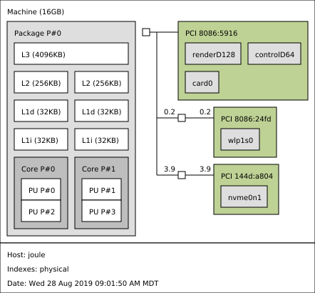
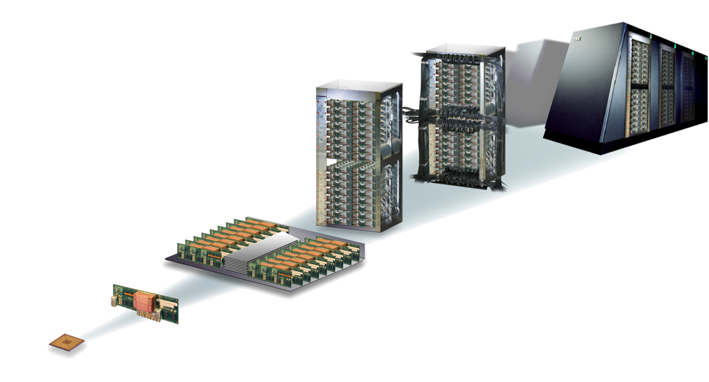

Cores, caches, and memory
A von Neumann Architecture

A contemporary architecture

My laptop
We can get this kind of information for our machine using hwloc, which provides a library as well as the command-line tool lstopo.
!lstopo --output-format svg > lstopo-local.svg

A double-socket compute node with two GPUs
2x Xeon Ivy-Bridge-EP E5-2680v2 + 2x NVIDIA GPUs (from 2013, with hwloc v1.11).
GPUs are reported as CUDA devices and X11 display :1.0: (from the hwloc gallery)

Block diagrams
A block diagram from a vendor can include additional information about how cores are physically connected.
Ring bus (Xeon E5-2600 family)

Mesh bus (Xeon Scalable family)

Multi-socket configurations

https://software.intel.com/en-us/articles/intel-xeon-processor-scalable-family-technical-overview
Multiple nodes go into racks or cabinets


Terminology
- Core (virtual and physical): has a single program counter (logically sequential processing of instructions)
- Memory channel: e.g., DDR4-2400: transfers 64 bits (8 bytes) at a rate of 2400 MHz = 15.36 GB/s
- Socket or CPU: contains multiple cores in a single piece* of silicon
- Non-Uniform Memory Access (NUMA): different channels may be different distances from a core
- Compute node: one or more sockets, plus memory, network card, etc.
How expensive is it to access memory?
What does that mean? How would we measure?
McKenney (2013): Laws of Physics
How your program accesses memory
double a[1000];
void foo() {
for (int i=0; i<1000; i++)
a[i] = 1.234 * i;
}
The compiler turns the loop body into instructions, which we can examine using Godbolt.
pxor xmm0, xmm0 ; zero the xmm0 register
cvtsi2sd xmm0, eax ; convert the integer i to double
mulsd xmm0, xmm1 ; multiply by 1.234 (held in xmm1)
movsd QWORD PTR a[0+rax*8], xmm0 ; store to memory address a[i]
Only one instruction here accesses memory, and the performance will be affected greatly by where that memory resides (which level of cache, where in DRAM).
Most architectures today have 64-byte cache lines: all transfers from main memory (DRAM) to and from cache operate in units of 64 bytes.

Let’s compare three code samples
for (int i=0; i<N; i++)
a[i] = b[i];
for (int i=0; i<N; i++)
a[i] = b[(i*8) % N];
for (int i=0; i<N; i++)
a[i] = b[random() % N];
What happens when you request a cache line?

Operating system effects
Most systems today use virtual addressing, so every address in your program needs to be translated to a physical address before looking for it (in cache or memory). Fortunately, there is hardware to assist with this: the Translation Lookaside Buffer (TLB).